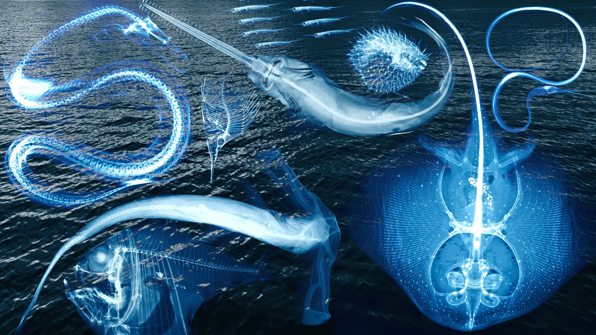

shui
_theme · iroFactory
Documentación para flujos de datos. Todo corre como agua: entra, se filtra, se guarda.
↓ CorrientesCorrientes
Paleta de colores
Turquesa Caribe de día, bioluminiscencia abisal de noche. Los tokens cambian con el modo.
Pelágica
Datos
Galería
Radiografías · Sandra Raredon, Smithsonian NMNH, División de Peces (imágenes temporales). Arrastra o toca para que la onda las cambie.
Avisos
Flujo de datos en tiempo real. Los paquetes suben desde el fondo.
Datos almacenados correctamente. El índice fue actualizado.
Latencia alta en la consulta. El buffer está al 87%.
Conexión al scraper perdida. Reintentar en 30 segundos.
Ingesta continua. El pipeline procesa 14,000 eventos por segundo.
Hit rate al 94%. Los datos viven en memoria.
SELECT * FROM ocean WHERE depth > 200;
B-tree sobre depth. La búsqueda cae de O(n) a O(log n).
Migración 0042. Columna bioluminescence en organisms.
Spider activo en 12 dominios. Rate limit a 2 req/s por host.
Bucket sincronizado. 2.4TB comprimidos en Parquet.
Badges
Botones
Métricas
Código
Inline: toggleTheme() baja de la zona pelágica a la abisal.
# Scraper de datos oceánicos
import asyncio
from aiohttp import ClientSession
class OceanScraper:
def __init__(self, depth: int):
self.depth = depth
self.buffer = []
self.zone = "pelagic" if depth < 200 else "abyssal"
async def fetch(self, url: str) -> dict:
async with ClientSession() as s:
async with s.get(url) as r:
return await r.json()Tabla
| Token | Pelágica | Abisal | Semántica |
|---|---|---|---|
--stream | #20D0C0 | #C040FF | Flujo de datos en tiempo real |
--cache | #40E0E0 | #FF40A0 | Caché en memoria · acceso rápido |
--query | #A0D8F8 | #00E8D8 | Consulta · búsqueda |
--index | #60A8E8 | #40FF80 | Índice · estructura de búsqueda |
--schema | #8888F8 | #8040FF | Esquema · definición de datos |
--scrape | #F08050 | #FF6040 | Scraper · extracción web |
--store | #20A080 | #00C8B0 | Almacenamiento persistente |
Pipeline log
Conexión establecida
PostgreSQL 16 · pool de 24 conexiones · latencia 2ms
Stream activo
Kafka topic ocean.events · 14,200 msgs/s · lag 0
Migración aplicada
0042_add_bioluminescence · 2.1M filas actualizadas
Cache pressure
Redis 87% memoria · eviction policy: allkeys-lru
Spider timeout
Host oceandata.io · 30s sin respuesta · retry 3/5
Pipeline
Scrape
Spider extrae datos crudos de 12 fuentes. Rate limit 2 req/s.
Parse y validación
Pydantic valida cada registro. Rechazos a la cola de descarte.
Cache
Redis deduplica por hash. Los duplicados no pasan.
Store
Parquet comprimido. Particionado por fecha y zona oceánica.
Cards
Transaccional · ACID · 2ms de latencia · pool de 24 conexiones.
Caché L1 · 94% de aciertos · LRU al 87% de memoria.